练习配置手顺（C0〜C16）
.png 放进 assets/gui/ 后执行 python3 tools/swap_gui_images.py <site> --apply 即可一键替换。这一页是「在自己的系统里把 見込生産（MTS）搭起来」的 16 步 + Cloud 对照。每一步固定七块内容： 目的 / IMGパス（日本語）/ T-code / 输入值 / 手顺 / 確認（自システムでの確認方法）/ つまずき / 練習課題。 原则是：能确认的先确认，不确认的不乱配——每个「标准值」都配了一条在你系统里核对的手顺。
配置前的准备
配置作业会在你的练习系统留下自建对象。开始前确认三件事：① 有可写入的カスタマイジング依頼（Customizing Request）；
② 用户能进入 SPRO（SPRO → 「カスタマイジング」→「IMG」）；③ 练习用的 販売組織/プラント/得意先/番号範囲 都可用。
VOV4・VOV5・VOV6・VOV7・OVZG・OVZI・OPPT・OPPS・OVZ9・OMDU 全部可以直呼。
本站每个 STEP 同时给出「T-code」与「IMGパス（日本語）」，照任一条走进同一个画面。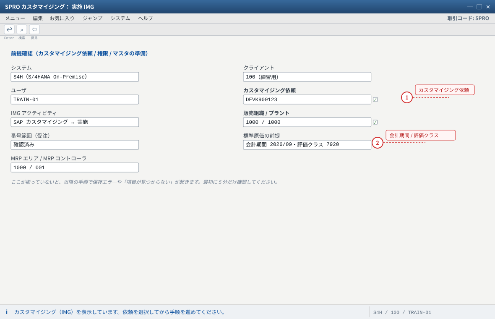
- 1 依頼を指定しないと保存できない
- 2 見込生産は PIR と標準原価の前提が要る
標準価格をマーク・リリース（CK24）できなければ、会計期間と評価クラスを確認してください。
前提与环境确认
VA01・BP/XD03・MMNR・VN01- 目的
- 避免「练习跑到一半才发现组织构造或主数据缺失」。MTS 的运气好在不需要动 SD 的核心对象（明細カテゴリ・納入日程行カテゴリ都用标准），所以前提确认做得干净，后面就顺。
- IMGパス（日本語）
- 不要走菜单——这一级用事务码 + 组织构造画面（
OX10プラント /OVX5販売組織のプラント割当 /OVX6出荷プラント）。确认「分配完了」即可，不改值。
输入值 / 确认对象
販売組織 1000 / 販売チャネル 10 / 部門 00 （販売エリア） プラント 1000 / 出荷プラント 1000 得意先 1000（受注先・出荷先を兼ねる。販売エリアビュー + 出荷先あり） 品目タイプ FERT（完成品）/ ROH・HAWA（部品）の番号範囲が有効 受注 / 出荷 / 請求 / 製造指図 の番号範囲に空きがある 会計期間（FI）が開いている（差異の決済で必要）
- 販売エリア：
VA01→ 初期画面で 販売組織1000/ 販売チャネル10/ 部門00が选得到（选不到 = 组织构造分配未做）。进入「受注伝票」画面后不必保存，返回。 - 得意先：
BP（S/4HANA の業務パートナー）或XD03→ 得意先1000：确认「販売エリア」ビュー与出荷先（船積先）已建，得意先グループ・支払条件有值。 - 品目番号範囲：
MMNR确认FERT的区间可用；VN01确认受注明細范围可用。 - 権限：能否执行
SPRO、MM01/MM02、MD61、MD01N、CO01/CO40/CO41、MIGO、VA01、VL01N、VF01、CK11N、KKS1、KO88。做不到的事务码先记下来。
VA01 能进入输入画面并看到 販売エリア = 1000/10/00，即前提基本满足。不要在 C0 就保存受注（第一次受注留给 练习④）——但 PIR 与生产的练习（①②③）不需要受注，可以先做。MD61 里选不到品目/プラント → 多半是品目还没建プラント在庫ビュー（MARC）。PIR 是「プラント単位」的需求，没有 MARC 就没有 PIR。OVX5），以及出荷プラント是哪一个（MM03 販売組織/プラント在庫）。—— 这一条会决定练习④里 ATP 检查的范围。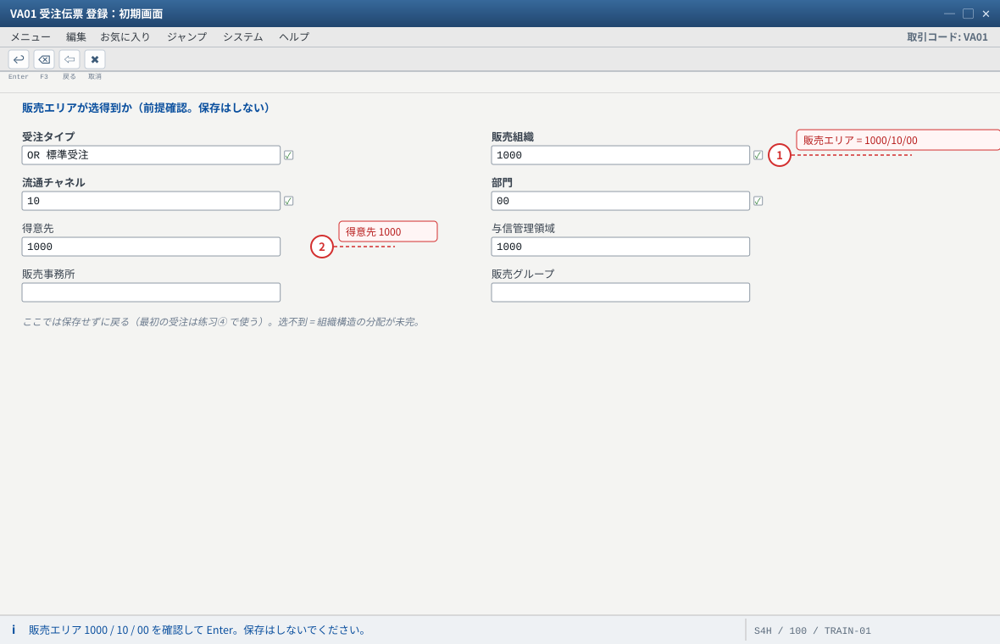
- 1 販売組織 1000 が選べる＝ OVX5（販売組織のプラント割当）まで済んでいる証拠
- 2 得意先 1000 は受注先と出荷先を兼ねる。出荷先（船積先）が無いと出荷伝票が作れない
自システムでの確認：OX10（プラント）/ OVX5 / OVX6（出荷プラント）、BP・XD03（得意先）、MMNR / VN01（番号範囲）。
部品品目（ZMTS-RM01 / ZMTS-RM02）
MM01 / MM02- 目的
- 让完成品有可出库的部品（BOM コンポーネント）。本教程为了让流程聚焦在見込生産，部品用初期在庫应付需求（部品不跑采购），購買流程留作发展课题（练习⑤）。
- IMGパス（日本語）
- 品目マスタは IMG ではなくマスタデータ：
MM01（登録）/'MM02（変更）/MM03（照会）。プラント在庫ビューだけは IMG 側の設定（品目タイプのビュー必須性）に依存するので、足りないビューは SPRO「ロジスティクス一般 > 品目マスタ > 基本設定」で確認。
输入值
| 項目 | ZMTS-RM01（板材） | ZMTS-RM02（紧固件） | ビュー |
|---|---|---|---|
| 品目タイプ / 単位 | ROH / PC | HAWA / PC | 基本データ1 |
| 品目グループ | 任意（例 001） | 任意 | 基本データ1 |
| 購買グループ / 調達タイプ | 001 / 外部調達 | 001 / 外部調達 | 購買 |
| MRPタイプ / ロットサイズ / 手配タイプ | PD / EX / F | PD / EX / F | MRP1 |
| 評価クラス / 価格管理 | （例）3000 / S | （例）3000 / S | 会計1 |
| 初期在庫（練習用） | 1,000 PC（移動タイプ 561） | 2,000 PC（561） | MIGO / MB1C |
MM01→ 品目ZMTS-RM01→ 産業コード（例M）→ 品目タイプROH→ ビュー選択：基本データ1・2 / 購買 / MRP1〜4 / 会計1 / 原価計算1 / プラント在庫 / 保管場所 → プラント1000、保管場所（例0001）。- 各视图按上表输入。戦略グループは空（部品は见込生産品的计划对象，不需要 PIR），MRP4 の 個別/包括所要量 也保持空。
- 保存 → 同様に
ZMTS-RM02を登録。 - 初期在庫：
MIGO（或MB1C）→ 移動タイプ561（初期在庫投入）→ 品目/プラント/保管場所/数量 → 転記。
MMBE → 品目 ZMTS-RM01 / プラント 1000：非制限利用（自由在庫）1,000 PC。MB52 也能看到同一行。在庫伝票は S/4HANA では MATDOC に記録される（SE16N: MATDOC → 移動タイプ 561）。② 部品に MRP ビューを付け忘れる → BOM 展开时出现「MRP 関連データが無い」警告；計畫手配はできますが、指図の部品予約（
RESB）缺日期与需求信息。③ 部品に戦略グループ 40 を付けてしまう → 部品也要 PIR 才补货，MRP 会空转。部品里只留 MRP タイプ PD。
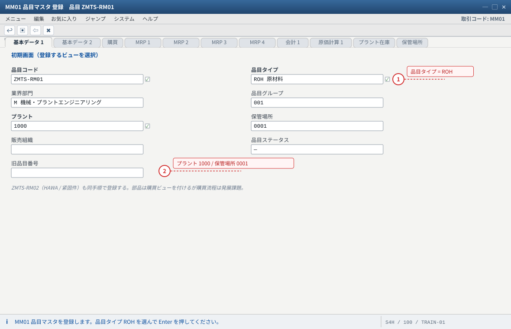
- 1 部品は ROH / HAWA。完成品 ZMTS-FG01（FERT）とはビュー構成が違う
- 2 初期在庫は MIGO の移動タイプ 561 で入れる（RM01 1,000 PC / RM02 2,000 PC）
自システムでの確認：ビューの必須性は SPRO「ロジスティクス一般 > 品目マスタ > 基本設定」と OMS2 で確認できます。
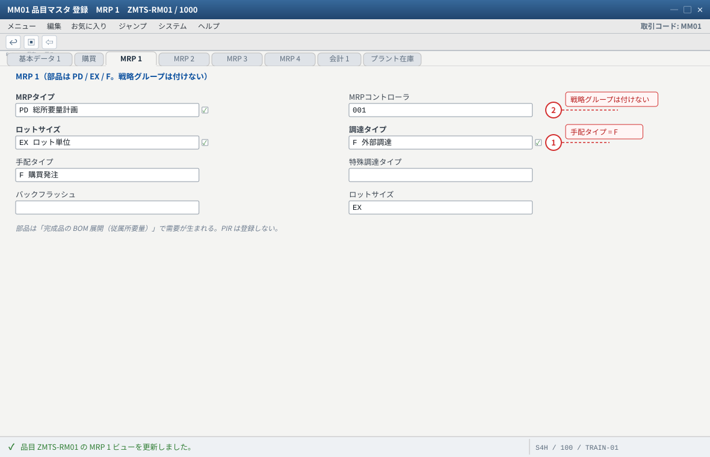
- 1 手配タイプ F = 外部調達。完成品の E（内製）と対比すると覚えやすい
- 2 部品に戦略グループ 40 を付けると MRP が空転する（PIR が無いので補貨し続ける）
自システムでの確認：MRP4 の「個別/包括所要量」も部品では空のままにします（MARC-DISMM / BESKZ）。
完成品品目 ZMTS-FG01（本教程最关键的一张主数据）
MM01 / MM02 / MM03- 目的
- 四个字段决定 MTS 的成立：MRP3 の戦略グループ
40（受注が PIR を消費する）、MRP3 の在庫確認（ATP 対象）、MRP1 の MRPタイプPD＋手配タイプE（MRP で計劃手配を作る）、MRP4 の 個別/包括所要量 = 空（受注に紐づけない = 自由在庫のまま）。另外 MRP2 の安全在庫是见込生产特有的缓冲。 - IMGパス（日本語）
- 品目マスタは
MM01。品目タイプFERTが持つビューの組を変えたい場合は IMG：ロジスティクス一般 > 品目マスタ > 基本設定 > 品目タイプ > 品目タイプの定義（OMS2）。本练习不改这个，只在MM01里选已有ビュー。
输入值（品目 ZMTS-FG01 / FERT / PC）
| 視図 | 項目 | 値 | 为什么 / 影响 |
|---|---|---|---|
| 基本データ1 | 品目グループ / 単位 | 001 / PC | — |
| 販売組織1 | 販売組織 / チャネル / 部門 | 1000 / 10 / 00 | 受注可能な販売エリア |
| 販売組織2 | 品目カテゴリグループ | 0001（NORM） | VOV4 の决定键。MTS 用标准 0001，练习⑤ 追加自建 Z001 来验证理解 |
| 販売組織2 | 品目統計グループ / 税区分 / 数量単位 | 1 / （例）MWST / PC | 価格・請求に必要 |
| MRP1 | MRPタイプ / MRPコントローラ / ロットサイズ | PD / 001 / EX | MRP 対象 + ロット単位で計画手配を作る |
| MRP1 | 手配タイプ / 特殊調達タイプ | E（内製）/ 空 | 内製 = 製造指図。空にすると計画手配が生成されません |
| MRP1 | バックフラッシュ | （練習用）1 或 空 | ON なら CO11N で部品が自動出庫（练习③ 的选项） |
| MRP2 | 安全在庫 | 100 PC | 見込生産の缓冲。MRP 会把它当作「仮想の在庫下限」 |
| MRP2 | 伝票タイプ（指図タイプ）/ 入庫処理時間 | PP01 / 0 | 製造指図のタイプ。简化纳期计算（教学用） |
| MRP3 | 戦略グループ | 40 | 受注が PIR を消費する（最終組立ありの計画）。MTS の心臓 |
| MRP3 | 消費モード / 逆消費期間 / 順消費期間 | 2 / 30 / 20 | 逆＋順消費。受注が納期の前後どれだけの PIR を食べられるか |
| MRP3 | 在庫確認（チェックルール） | 02 | ATP を行うためのチェックルール。値の意味は F1/F4 で確認（下表） |
| MRP4 | 個別/包括所要量 | 空 | MTS 与 MTO 的分水岭。设成「個別所要量のみ」就会变成受注在庫 E |
| 会計1 | 評価クラス / 価格管理 | （例）7920 / S | 標準価格で評価（見込生産の前提） |
| 原価計算1 | 原価計算ロットサイズ / 原価計算バリアント | （例）EX / 标准 PP 用 | 指図の目標原価（差異計算の基准） |
MM01→ 品目ZMTS-FG01/ 産業コードM/ 品目タイプFERT→ ビューは全選択（基本1・2 / 購買 / MRP1〜4 / 会計1・2 / 原価計算1・2 / プラント在庫 / 保管場所 / 販売組織1・2 / プラントデータ販売組織）→ プラント1000・保管場所0001・販売組織1000/10/00。- 上表の値を順に入力。迷うのは 3 处：MRP3 の戦略グループ（
40）、MRP4 の個別/包括所要量（空）、販売組織2 の品目カテゴリグループ（0001）。 - 保存。
MM03で MRP ビューを再确认（自系统实际保存的值才是「事实」）。 - 若要跑练习⑤ 的「戦略 10 と 40 の比較」，可再建一个品目
ZMTS-FG10（同一套 BOM/工程，只把 MRP3 の戦略グループ改成10）。
MM03 → ZMTS-FG01 → 追加ビュー選択 で MRP1/2/3/4 を順に開き、上表と一致するか。表 MARC で直接見るのも有効：SE16N: MARC（キー MATNR=ZMTS-FG01 / WERKS=1000）→ フィールド STRGR（戦略グループ）/ VRMOD・VINT1・VINT2（消費）/ DISMM・DISPO・BESKZ・EISBE。② 個別/包括所要量に
1（個別所要量のみ）を入れてしまう → 入库跑进受注在庫 E，变成 MTO 而自己不知道（症状：MMBE 在自由在庫看不到成品，只有「得意先別」一栏有数）。③ 手配タイプを空にする →
MD01N 跑完没有計劃手配（症状：MD04 只有 PIR 行，没有计划行）。④ 在庫確認
02 の意味を间接假设：不同环境里 01/02/… 的可用性检查范围可能不同，看 F1 的帮助文字再定。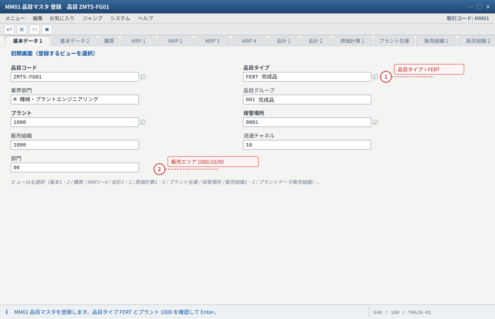
- 1 品目タイプ FERT。MTS の完成品はここが FERT で、販売組織2 の品目カテゴリグループ 0001 と対になる
- 2 販売組織 1000 / チャネル 10 / 部門 00 = 受注可能な販売エリア（C5/C7 の前提）
自システムでの確認：品目タイプが持つビューの組は OMS2（品目タイプの定義）で確認できます。
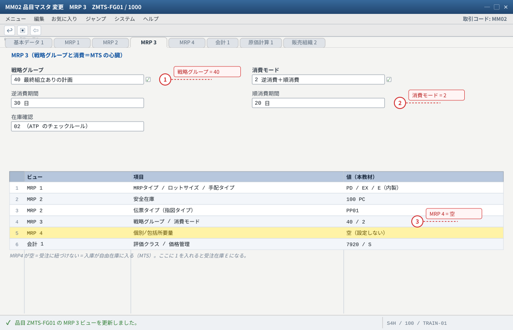
- 1 戦略グループ 40 = 受注が PIR を消費する。空にすると予測と受注が無関係になる
- 2 消費モード 2（逆 30 / 順 20）。納期の前後どれだけの PIR を食べられるかを決める
- 3 個別/包括所要量は空。ここが MTS と MTO の分水嶺
自システムでの確認：MM03 MRP3 / SE16N: MARC（キー MATNR=ZMTS-FG01 / WERKS=1000）→ STRGR・VRMOD・VINT1・VINT2。
BOM・作業区・作業手順（標準原価の入力でもある）
CS01 / CR01 / CA01 / C223- 目的
- ① 让 MRP 能做 BOM 展開（部品的従属所要量）；② 让
CK11N能算出标准成本（部品＋工数）；③ 让CO11N有可实绩的工序。 - IMGパス（日本語）
- マスタデータなので T-code 中心。作業区の標準値パラメータは IMG：生産 > 基本設定 > 作業区 > 一般データ（
OPAL系）。本练习用标准默认即可，不改。
输入值
| 対象 | 値 | T-code |
|---|---|---|
| BOM（完成品） | ZMTS-FG01 → 部品 ZMTS-RM01 × 2、ZMTS-RM02 × 4（Base quantity 1 PC、工程 0010 割当） | CS01（照会 CS03、一括 C223） |
| 作業区 | ZMTS_WC01（組立）。原価計算用の式・活動タイプを割当（例 活動タイプ LAB01・機械時間 1 H/PC） | CR01（照会 CR03） |
| 作業手順 | 工程 0010（工程 10）：作業区 ZMTS_WC01、標準時間 1 H / PC、必要能力 1 | CA01（照会 CA03） |
CS01→ 品目ZMTS-FG01/ プラント1000/ BOM 用途1→ 明細に RM01（数量 2）・RM02（数量 4）を追加 → 保存。CR01→ 作業区ZMTS_WC01/ プラント1000→ 基本データ（責任者・基本単位）+ 原価計算（活動タイプと式）→ 保存。CA01→ 品目ZMTS-FG01/ プラント1000→ 工程0010、作業区ZMTS_WC01、標準値（1 H）→ 割当：品目ZMTS-FG01、BOM 用途 1（これで CK11N が数量構造を拾える）→ 保存・解放。
CS03 で明細 2 行、CA03 で工程 1 行。MD04 に PIR があるときに MD02（単品目 MRP）を走らせると、部品側に従属所要量（RM01 = 完成品数量 × 2）が出る——これが BOM 展開が効いている証拠。② 作業手順の「割当」を忘れる → 指図作成時に「工程なし」となり、
CO11N で実績できない（CK11N も工数が拾えない）。③ 作業区の活動タイプ/式が原価計算用に未設定 → CK11N で作業費が 0 になり、差異分析の意味が薄れる。
CO03 の構成品目で確認）。—— 500 × 2 = 1,000 PC。これが练习③ 的 261 出庫数量，也是 BOM 展開是否正确的证据。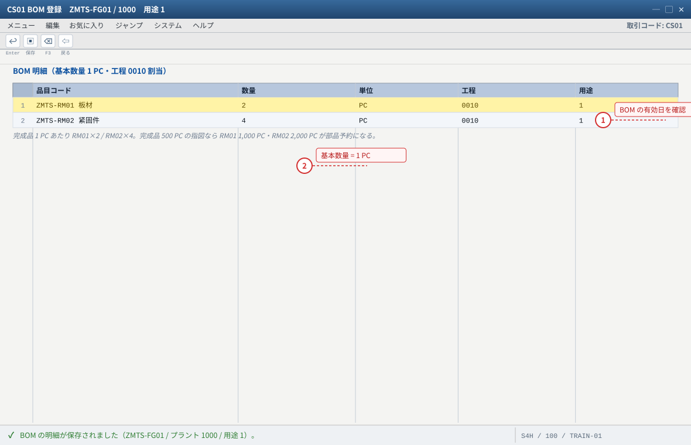
- 1 有効日（有効期間）が练习日より前で終わっていると MRP が展開しない
- 2 基本数量を 100 PC などにしていると数量が BOM の倍数と合わなくなる
自システムでの確認：CS03 で明細 2 行。MD02（単品目 MRP）後に部品側へ従属所要量が出れば BOM 展開が効いている証拠です。
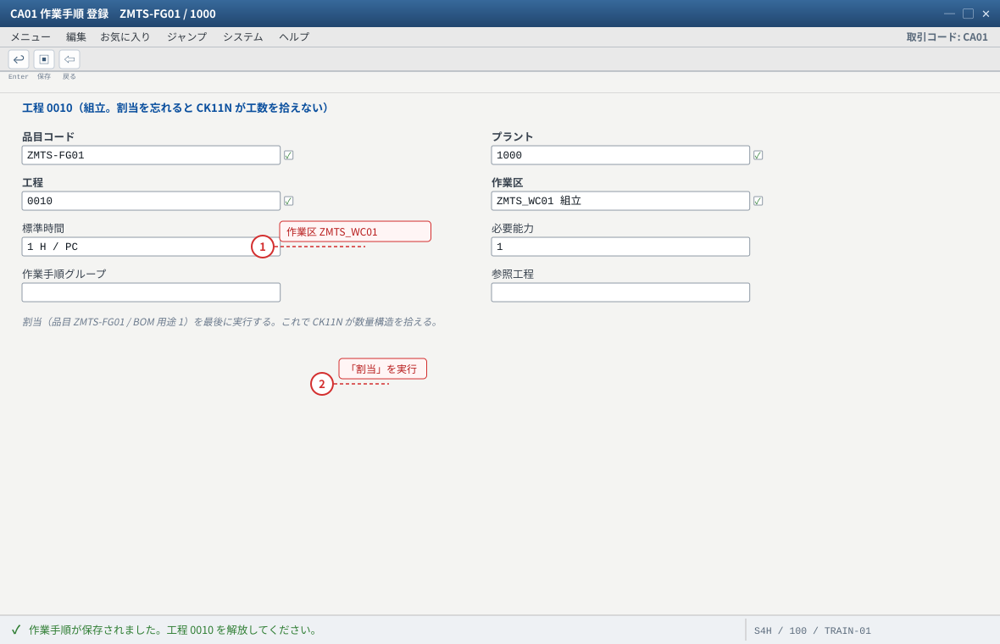
- 1 作業区の活動タイプと式が未設定だと CK11N の作業費が 0 になり差異分析が成立しない
- 2 割当を忘れると「工程なし」の指図になり CO11N で実績できない
自システムでの確認：CA03 で工程 1 行、CR03 で作業区。作業区の標準値パラメータは OPAL 系（IMG：生産 > 基本設定 > 作業区）です。
標準原価の計算・マーク・リリース（CK11N → CK40N → CK24）
CK11N・CK40N・CK24・OKKN・KP26- 目的
- 给完成品一个標準価格（例
8,000 JPY）。MTS 是「先造后卖」，库存必须以标准价评价，否则月末无法算差异——这一步做不了，练习⑤ 就只能看个热闹。 - IMGパス（日本語）
- IMG：管理会計 > 製品原価管理 > 製品コストの計画 > 標準原価計算 > 原価計算バリアントの定義（
OKKN）。 作業区のレートは IMG：管理会計 > 管理会計転送 > 活動タイプのレート割当（KP26で年度レートを直接入力）。
输入值 / 手順の前提
価格管理 S（標準価格） ← 品目 会計1
標準価格 8,000 JPY / PC ← CK11N → CK24（リリース）後に見える値
原価計算バリアント 標準 PP 用（例 PP01 系）
原価計算ロットサイズ EX（ロット単位）
計算の内訳（イメージ） 部品費 RM01 2×1,000 + RM02 4×500 = 4,000
＋ 作業費 1 H × 3,000 = 3,000
＋ 間接費/管理費など = 1,000 → 合計 8,000 JPY
KP26（或 IMG のレート割当）→ 原価センタ / 活動タイプ（例LAB01）/ 年度 → レート（例 3,000 JPY/H）を入れる。これが無いと CK11N の作業費が 0。CK11N→ 品目ZMTS-FG01/ プラント1000/ 日付（当日）→ 原価計算バリアント（例 PP01 系）→ 実行。結果の項目明细（コストコンポーネント）を確認：部品費・作業費・間接費。- 結果を保存（成本估算版本が作られる）。必要なら明細の警告（レート無し・工程無し）を潰して再実行。
CK40N（一括）を使う場合：選択 → 実行（構造展開 → 原価計算 → マーク → リリース）の 4 段階を順に。「マーク」で来期、「リリース」で今期の標準価格になる。CK24→ 品目ZMTS-FG01/ 会計期間 → マーク（Mark） → 続けてリリース（Release）。
MM03 → 会計1 → 標準価格 = 8,000 JPY（価格管理 S、有効日）。値の出どころは CK13N（原価計算の照会）与 CK24 的履歴。表で見るなら
SE16N: MBEW（キー MATNR/WERKS/BWTAR=標準価格）→ STPRS・PEINH・VPRSV（価格管理）。② レート（
KP26）が当期に無い → 作業費 0 の標準原価（例 5,000 JPY）が計算され、差異が全額「作業関連」に化ける。③ 品目に原価計算バリアント/ロットサイズ未設定 → CK11N でエラー。F1 で必要項目を確認。
④ 期中のリリースは在库存评价会重估——练习系统里做，不要在实训外的系统试。
MM03 会計1 の標準価格と、CK13N 的项目明细做一次对照：部品費・作業費・間接費 各多少？——这三个数在练习⑤ 的差异分析里会直接对应到差异类别（価格差異 / 数量差異 / 資源使用差異）。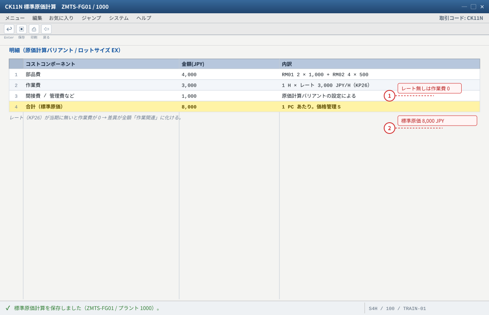
- 1 作業費 3,000 の出どころは KP26 の活動タイプレート（例 LAB01 / 3,000 JPY/H）
- 2 合計 8,000 JPY がそのまま在庫の評価単価になる（見込生産＝標準原価で評価）
自システムでの確認：明細の警告（レート無し・工程無し）を潰して再実行し、CK13N で再照会。レートは KP26 か IMG「管理会計 > 管理会計転送 > 活動タイプのレート割当」で確認。
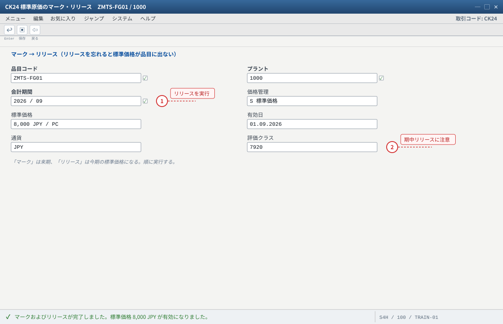
- 1 リリースまで実行する。マークだけだと会計1 に標準価格が出ず、指図の目標原価が無くなる
- 2 期中のリリースは在庫評価を再評価する。练习系统以外では実行しない
自システムでの確認：MM03 会計1 に標準価格 8,000 JPY が出るか。表は SE16N: MBEW（MATNR/WERKS/BWTAR）→ STPRS・PEINH・VPRSV。
販売条件（PR00）与 品目カテゴリグループの確認
VK11・MM03（販売組織2）- 目的
- ① 让受注能自动定价（
PR00= 8,000 JPY）；② 确认品目カテゴリグループ是0001（NORM）——它是VOV4决定明細カテゴリ的第一个键。MTS 不需要新建明細カテゴリグループ（标准0001就是为库存品准备的）。 - IMGパス（日本語）
- 明細カテゴリグループの定義：IMG：販売管理 > 販売伝票 > 販売伝票明細 > 定義: 明細カテゴリグループ（直接の T-code は無い場合が多く、SPRO の検索窓で「明細カテゴリグループ」を検索するのが早い）。
条件タイプの定義：IMG：販売管理 > 基本機能 > 価格設定 > 条件タイプの定義（V/06）/ 価格設定手順（V/08）。
输入值
| 対象 | 値 | T-code |
|---|---|---|
条件レコード PR00 | 販売組織 1000 / 品目 ZMTS-FG01 / 金額 8,000 JPY（1 PC）/ 有効期間（练习日を含む） | VK11（照会 VK13） |
| 品目カテゴリグループ | 0001（NORM）——品目 ZMTS-FG01 の販売組織2 | MM03 販売組織2 |
| （参考）標準のグループ | 0001 NORM / 0002 LUMF（BOM 関連・VC 側）/ DIEN / LEIS / ERLA。見込生産専用の標準キーは特に無い | 同上 |
VK11→ 条件タイプPR00→ 販売組織 1000 / 品目 / 金額 8,000 / 有効期間 → 保存。MM03→ZMTS-FG01→ 販売組織2 → 品目カテゴリグループ =0001を確認。空だと受注明細カテゴリが決まらず、受注が保存できない（或决定成意外的东西）。- （练习⑤ 用）自建品目カテゴリグループ
Z001：SPRO 明細カテゴリグループの定義画面で「新規エントリ」→Z001（例）。これをやると C6〜C9 の自建对象が活きる。
VK13 で条件レコードが見えること；VA01 で 1 PC 入れて条件画面に 8,000 JPY が出ること。表なら
SE16N: MVKE（MTPOS = 品目カテゴリグループ）与 KONP/KONV（条件レコード）。② 品目カテゴリグループを空のまま受注 → 「明細カテゴリを決定できません」で受注が保存できない。
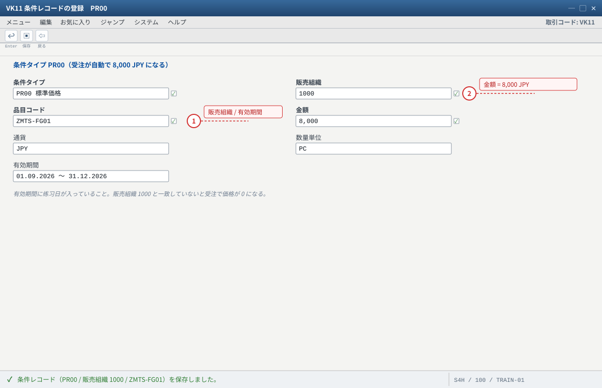
- 1 販売組織の不一致や期限切れは「警告だけ」のこともあり、見落とすと請求が 0 円になる
- 2 受注 200 PC × 8,000 = 1,600,000 JPY が练习④ の請求額になる
自システムでの確認：VK13 で条件レコードが見えること、VA01 で 1 PC 入れて条件画面に 8,000 JPY が出ること。表は SE16N: KONP / KONV。
明細カテゴリの定義・確認（VOV7）
VOV7- 目的
- 确认标准明細カテゴリ
TAN，尤其是「特別在庫」欄が空——这一栏就是 MTS 与 MTO 在 SD 侧的物理分界（MTO 的ZTAK会填E）。 - IMGパス（日本語）
- IMG：販売管理 > 販売伝票 > 販売伝票明細 > 明細カテゴリの定義 > 明細カテゴリの定義（
VOV7）。
输入値 / 見るべきフラグ
明細カテゴリ TAN（標準・在庫品用）
一般データ： 販売伝票タイプ OR で使用可、明細カテゴリ = 標準
特別在庫： 空 ← ★ MTS の証拠（MTO なら E）
価格設定： 有効（条件タイプ PR00 が使える）
納入日程行許可：ON（納入日程行カテゴリを決定させる）
所要量転送/在庫確認：納入日程行カテゴリ側で制御（C8/C9）
自建する場合（练习⑤）：ZTAN ← TAN をコピーし、特別在庫は「空」のまま
（MTO 的 ZTAK はここに E を入れる）
VOV7→ 明細カテゴリTANを選択 → 明細：一般データを確認（明細カテゴリ・特別在庫・価格設定・納入日程行許可）。- 「納入日程行許可」が ON であること（OFF だと
VOV5的割当が無視され、納入日程行が作られない）。 - （练习⑤）新規エントリ：
ZTAN（TANをコピー）→ 保存。特別在庫は空のまま。
VOV7 の一覧で TAN の行を開き、明細カテゴリ/特別在庫を直接読む。表なら SE16N: TVAP → フィールド SOBKZ（特別在庫）が空であること（MTO 教材と対比すると理解が速い）。TAN に誤って E を入れてしまう → 受注が受注在庫前提になり、MTS の MRP4 空 設定と矛盾して「在庫が二重に見える」。② 「納入日程行許可」を間違って OFF → 受注は保存できるが納入日程行が無く、所要量転送も在庫確認も起きない（症状：MD04 に受注が出ない）。
VOV7 で TAN と「MTO 用の明細カテゴリ」を並べて、「特別在庫」欄の違いだけを説明できるようにする。姊妹站 sapmto の C6 と同じ画面です。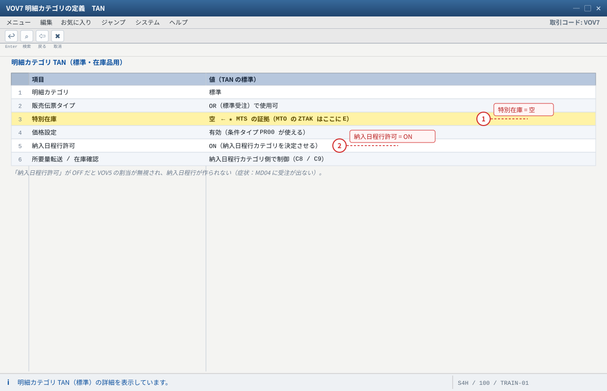
- 1 特別在庫が空 = 自由在庫で売る（MTS）。ここに E を入れると受注在庫前提になり在庫が二重に見える
- 2 納入日程行許可 ON が C9 の割当が効く前提
自システムでの確認：SE16N: TVAP → SOBKZ（特別在庫）が空であること。姊妹站 sapmto（MTO）の同画面と並べると違いが一目で分かります。
明細カテゴリの割当（VOV4）
VOV4- 目的
- 让受注明細在「標準受注 OR × 品目カテゴリグループ
0001」时自动决定成TAN。MTS 用标准行即可，但必须知道四个决定键（缺一个就会决定失败）。 - IMGパス（日本語）
- IMG：販売管理 > 販売伝票 > 販売伝票明細 > 明細カテゴリの割当 > 販売伝票タイプ別の明細カテゴリの割当（
VOV4）。
决定键（VOV4 の 4 鍵）と入力値
| 販売伝票タイプ | 品目カテゴリグループ | 用途 | 上位明細カテゴリ | → 明細カテゴリ |
|---|---|---|---|---|
OR（標準受注） | 0001 | 空 | 空 | TAN（标准行・确认のみ） |
OR | Z001（练习⑤ 自建） | 空 | 空 | ZTAN（自建） |
VOV4→ 販売伝票タイプOR→ 一覧で 品目カテゴリグループ0001/ 用途（空）/ 上位明細カテゴリ（空）→TANの行を確認。- （练习⑤）新規行を追加：
OR+Z001+ 空 + 空 →ZTAN。保存。 - 空值也是键——不要随便填「用途」或「上位明細カテゴリ」，填了就变成另一套决定路径（上位明細カテゴリ是 BOM/VC 场景用的）。
VOV4 一覧（表 TVAK/TVAP 群）。② 実機：VA01 → 受注を 1 件作り、明細の「明細詳細」或「明細カテゴリ」欄を見る（VA03 でも可）。期待 = TAN。③ 决定失敗時は受注保存時に「明細カテゴリを決定できません」メッセージ。
MM02 で後から変えたのに VOV4 に行が無い → 受注登録が止まる。② 販売伝票タイプを誤る（
TA・ZOR など自建タイプ）→ OR の行は効かない。VA03 の明細で「明細カテゴリ = TAN」を確認する。次に品目カテゴリグループを Z001 に変えて再度受注し、ZTAN になることを確かめる（練習⑤ の前半）。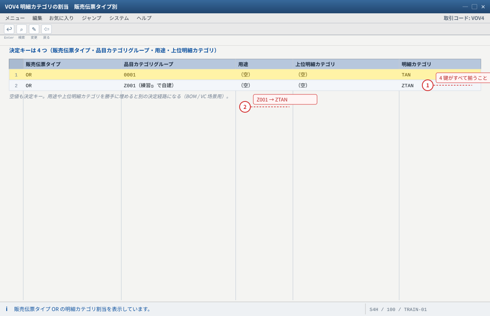
- 1 品目マスタ（販売組織2）の品目カテゴリグループが空だと、この行が効かず受注が保存できない
- 2 自建 Z001 / ZTAN は練習⑤。追加しないと標準 TAN のままになる
自システムでの確認：VA01 で受注を 1 件作り、明細の明細カテゴリが TAN か（表 TVAK / TVAP）。決定失敗時は「明細カテゴリを決定できません」で保存が止まります。
納入日程行カテゴリの定義（VOV6）——所要量転送と在庫確認的开关
VOV6- 目的
- 納入日程行カテゴリ决定「受注要不要转需求给 MRP（所要量転送）」与「要做 ATP（在庫確認）」。MTS 两件事都要 ON：预测要能被消费、库存要能被引当。
- IMGパス（日本語）
- IMG：販売管理 > 販売伝票 > 販売伝票明細 > 納入日程行 > 納入日程行カテゴリの定義（
VOV6）。
見るべきフラグ（標準 CP）
納入日程行カテゴリ CP（標準・MRP 関連）
一般： 移動タイプ 601（出荷の出庫確認）/ 納入関連 ON / 納入数量決定 = 完全/部分
所要量転送： 所要量タイプの転送 ON ── 受注が MRP に見える（得意先所要量）
在庫確認： 在庫確認 ON（チェックグループ、所要量タイプのチェック）
品目カテゴリ TAN + MRPタイプ PD でこの CP が選ばれる（C9）
对照 MTO： ZCP の「所要量転送」OFF・「在庫確認」OFF にする教材も多い
（受注在庫 E だけを見せる場合。実際は環境により異なる → VOV6 で確認）
VOV6→ 納入日程行カテゴリCP→ 一般データ（移動タイプ601・納入関連 ON）を确认。- 所要量転送：所要量タイプの転送が ON（= 受注が MRP に需求として見える）。付随して「所要量タイプ」（
BDART）が空なら C11 で決まるものを拾う。 - 在庫確認：ON（チェックグループ/ルールの組み合わせで実施）。
- （练习⑤）自建
ZCPはCPをコピーし、所要量転送と在庫確認は ON のまま（MTS の標準挙動を保持）→ 保存。
VOV6 の画面で直接読む。表なら SE16N: TVEP：BEDSD（所要量転送）、ATPPR（在庫確認）、BWART（移動タイプ = 601）、BDART（所要量タイプ）。実機の証拠は VA03 → 明細 → 納入日程行 → 「所要量転送」と「在庫確認」の欄、または SE16N: VBEP（BEDSD/ATPPR）。② 在庫確認 OFF → 受注は保存できるが「確認済数量 0」、出荷伝票で引当できない。
③ 移動タイプを 601 以外にすると PGI で在庫が落ちない。
④ 値は環境で違う：
CP の中身を思い込まず、VOV6 と VBEP で自分の目で読む。VOV6 で CP の所要量転送・在庫確認・移動タイプの 3 つを書き出し、受注 1 件の VBEP の同項目と一致することを確認する。不一致（例：受注では CN になっている）なら原因は C9 の割当。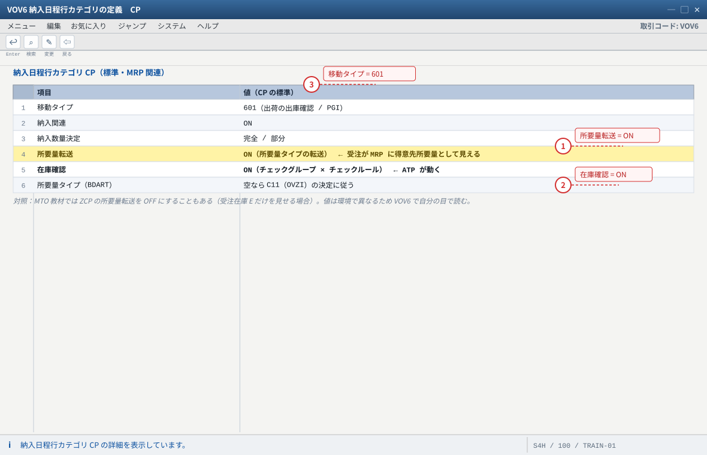
- 1 所要量転送 OFF → MD04 に受注が出ない。MTS 教材で最頻出の故意犯
- 2 在庫確認 OFF だと受注は保存できても確認済数量 0 になる
- 3 移動タイプを 601 以外にすると PGI で在庫が落ちない
自システムでの確認：SE16N: TVEP → BEDSD（所要量転送）/ ATPPR（在庫確認）/ BWART（601）/ BDART（所要量タイプ）。実機は VA03 → 明細 → 納入日程行。
納入日程行カテゴリの割当（VOV5）
VOV5- 目的
- 让「明細カテゴリ
TAN+ 品目 MRPタイプPD」决定出納入日程行カテゴリ（通常はCP）。决定键只有两个：明細カテゴリ与MRPタイプ——这就是「品目有没有 MRP ビュー」会影响受注行为的原因。 - IMGパス（日本語）
- IMG：販売管理 > 販売伝票 > 販売伝票明細 > 納入日程行 > 納入日程行カテゴリの割当（
VOV5）。
输入値
| 明細カテゴリ | MRPタイプ | → 納入日程行カテゴリ | 備考 |
|---|---|---|---|
TAN | PD（品目の MRPタイプ） | CP（标准・通常在庫品） | 本教材の主経路（确认のみ） |
TAN | 空（品目に MRP ビュー無し） | 環境により CN 等。所要量転送/在庫確認の設定も異なる | 「受注が MRP に出ない」の典型的な根因 |
ZTAN（自建） | PD | ZCP（练习⑤） | 割当を追加しないと ZTAN では CP のままになる |
VOV5→ 明細カテゴリTAN→ MRPタイプPDの行 → 納入日程行カテゴリCPを确认。- 一覧で
TANに「MRPタイプ空」の行があるかも見る（受注時にどちらが効いたかはVBEPで確定）。 - （练习⑤）
ZTAN+PD→ZCPの行を新規追加。
VOV5 の一覧。② 実機：VA01 → VA03 → 明細 → 納入日程行タブ → 納入日程行カテゴリが CP か（表 VBEP の ETTYP）。③ 品目の MRPタイプが空の品目で受注すると別カテゴリになる——「MRPタイプ → 納入日程行カテゴリ → 所要量転送」の因果を実機で再現できる。CP になることがある → 「見た目は OK、でも MRP に需求が出ない」。だから MD04 まで見るのが必須（MD04 に出て初めて所要量転送が効いたと言える）。② 自建
ZTAN の割当を忘れる → ZTAN でも標準 CP が使われ、自建 ZCP の検証ができない。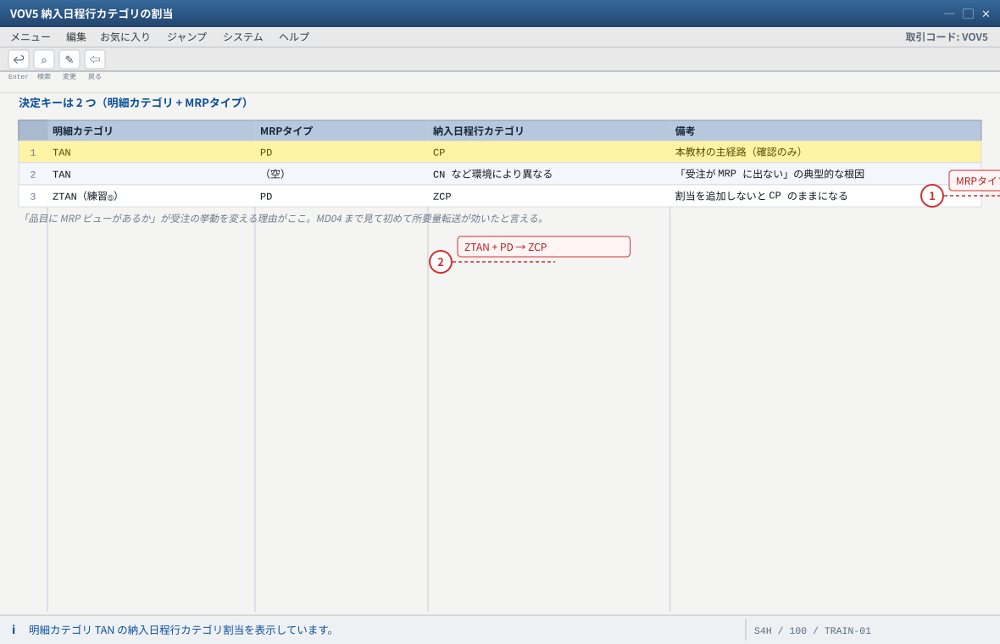
- 1 品目の MRPタイプが空（MRP ビュー無し）だと別カテゴリになり、所要量転送も在庫確認も動かない
- 2 自建 ZTAN の割当を忘れると標準 CP が使われ、自建 ZCP の検証ができない
自システムでの確認：VA03 → 明細 → 納入日程行タブで納入日程行カテゴリ（表 VBEP の ETTYP）。
所要量クラス（OVZG）——MTS のクラスには「個別在庫」を付けない
OVZG- 目的
- 所要量クラス是「需求的性质」，它决定 ① 要不要做個別在庫（受注在庫 E）② 要不要消费 PIR ③ 需求归谁。MTS 用的类（
100見込生産 /030在庫からの販売 /050消費付き受注）都没有個別在庫；有 E 的是 MTO 系的040。 - IMGパス（日本語）
- IMG：販売管理 > 基本機能 > 在庫確認と所要量転送 > 所要量転送 > 所要量クラスの定義（
OVZG）。
見るべきクラス（値は環境で確認）
| 所要量クラス | 用途・説明 | 個別在庫 | PIR 消費 |
|---|---|---|---|
100 | 見込生産（Make-to-stock prod.）— 戦略 10/30 の独立所要量（LSF） | なし | （戦略 10 は消費しない → 消減で処理） |
030 | 在庫からの販売（Sale from stock）— 得意先所要量 KSL（戦略 10/11） | なし | しない（受注は情報表示のみ） |
050 | 消費付き受注（SlsOrd w consu./Delv.）— 得意先所要量 KSV（戦略 40） | なし | する（← 本教材の主役） |
101/102 | 最終組立ありの計画 の独立所要量（VSF）/ 総所要量計画（BSF）番号は環境で確認 | なし | — |
040（对照） | MTO 系（MakeToOrdNoValW/o cons）— 得意先所要量 KE。個別在庫あり | あり | — |
OVZG→ 一覧から100を選択 → 「個別在庫」欄が空であることを确认。続けて030・050も同様に。- 对照として
040（MTO 系）を開き、個別在庫が「あり」であることを見る——これが E 特在の源流。 - 「独立所要量消減（Reduction of independent requirements）」のフラグを确认：戦略
10/11は消費しないので、消減でPIR を減らす必要がある（SAP Help: 独立所要量消減）。
OVZG の一覧と各クラスのフラグを直接読む。どのクラスが実際に使われたかは受注側で確認：VA03 → 明細 → 納入日程行 → 所要量タイプ（例 KSV）→ その タイプの クラスを OVZG/OVZH で引き当てる。表は SE16N: T459K（所要量転送の制御テーブル）。MMBE のプラント在庫 0、得意先別にだけ数がある）。② 「消費」フラグの意味を取り違える（クラスが消費するか、戦略が消費するか）→ 受注と PIR 的 关系不符预期。判断は MD04 の実測で行う。
OVZG で 100 / 030 / 050 / 040 の 4 行を表にする：個別在庫・消費・評価の 3 列。这个表就是「MTS 与 MTO 在 CO/SD 側的分水岭」。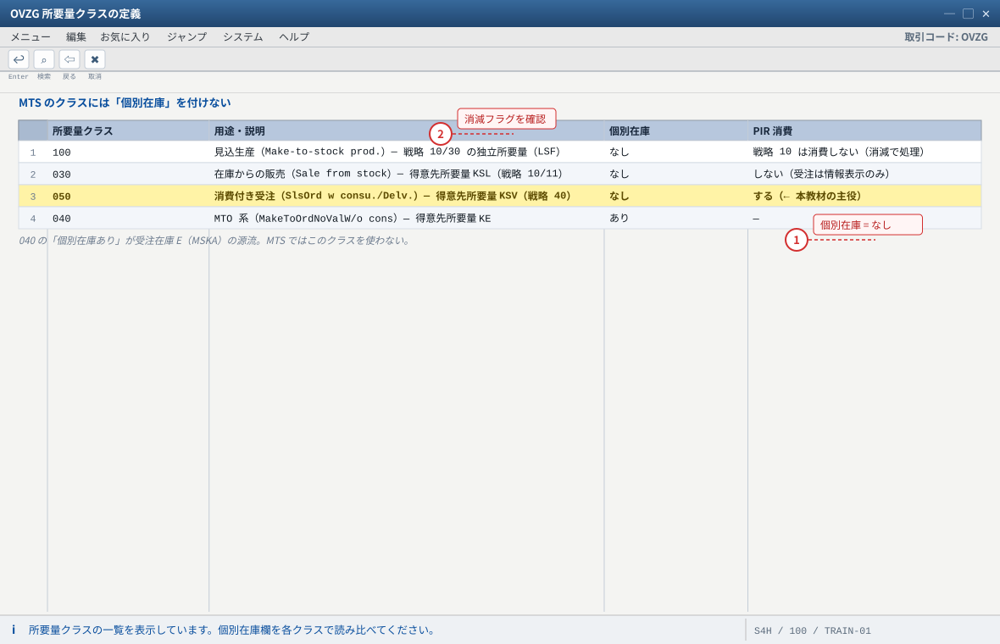
- 1 クラスに個別在庫があると入庫が受注在庫 E に行き、自由在庫が空のままになる
- 2 戦略 10/11 は消費しないので「独立所要量消減」フラグで PIR を減らす
自システムでの確認：どのクラスが実際に使われたかは VA03 → 納入日程行 → 所要量タイプ（例 KSV）→ OVZG / OVZH で引当て。表は SE16N: T459K。
所要量タイプとその決定（OPPS・OVZH・OVZI）
OPPS / OVZH / OVZI- 目的
- 所要量タイプ是需求的「身份证」（
VSF= 独立所要量 /KSV= 得意先所要量 等），它承载「哪个所要量クラスを使うか」。决定顺序是：① 品目マスタの戦略グループ → ② それが無ければ 明細カテゴリ + MRPタイプ（OVZI）。 - IMGパス（日本語）
- IMG：販売管理 > 基本機能 > 在庫確認と所要量転送 > 所要量転送 > 所要量タイプの定義（
OVZH）／所要量タイプの決定（OVZI）。独立所要量側は IMG：生産 > 基本設定 > MRP > 計画 > 計画方針（OPPS）で扱う。
見るべき対応（通常は〜。自システムで確認）
| 対象 | 所要量タイプ | 所要量クラス | 出典 |
|---|---|---|---|
| 戦略 10 の独立所要量 | LSF（Make-to-stock production） | （見込生産系） | SAP Tribal Knowledge / SAP PRESS |
| 戦略 11 の独立所要量 | BSF（Gross planned indep. reqmts） | 102（Gross reqmts plnning） | SAP Tribal Knowledge |
| 戦略 40 の独立所要量 | VSF | （環境で確認） | SAP Tribal Knowledge |
| 戦略 40 の得意先所要量 | KSV（Sales Ord w. consumpt./Delivery） | 050（SlsOrd w consu./Delv） | SAP Tribal Knowledge |
| 戦略 10/11 の得意先所要量 | KSL（Sale frm stck w/o ind.req.red.） | 030（Sale from stock） | SAP Tribal Knowledge |
OPPS→ 計画方針（戦略）の一覧で40を選択 → 割り当てられている独立所要量タイプ（VSF）と得意先所要量タイプ（KSV）を确认。OVZH→ そのタイプを開き、所要量クラス与「消費」関連フラグを确认。OVZI→ 決定の一覧（列「起点/origin」）を確認：戦略グループが優先し、無い場合に明細カテゴリ + MRPタイプで決まる仕組み。- 実機で検証：受注を作り
VA03→ 納入日程行 → 所要量タイプ = KSV、PIR 行の所要量タイプ =VSF（MD04の明細 /MD73）。
OPPS（計画方針）・OPPT（計画方針グループ一覧）・OVZH・OVZI。実機側 =
VA03 の納入日程行（得意先系）・MD04 の独立所要量明細（独立系）・SE16N: VBEP-BDART・PBED 明細の所要量タイプ。OVZI 的自建決定は効かない（優先順位が上）。自建の検証をしたいなら戦略グループを外すか、戦略グループ側（OPPS）を自建する。② 所要量タイプ名（
VSF/LSF）は環境で番号が違う可能性がある——必ず OPPS/OVZH で読む。教材の値は「通常は」のレベル。OPPS で自分のシステムの戦略 40 の独立/得意先所要量タイプを書き出し、本站写的 VSF/KSV と一致するか確認する。違ったら自分の値を正として、以降の練習を読み替える（メカニズムは同じ）。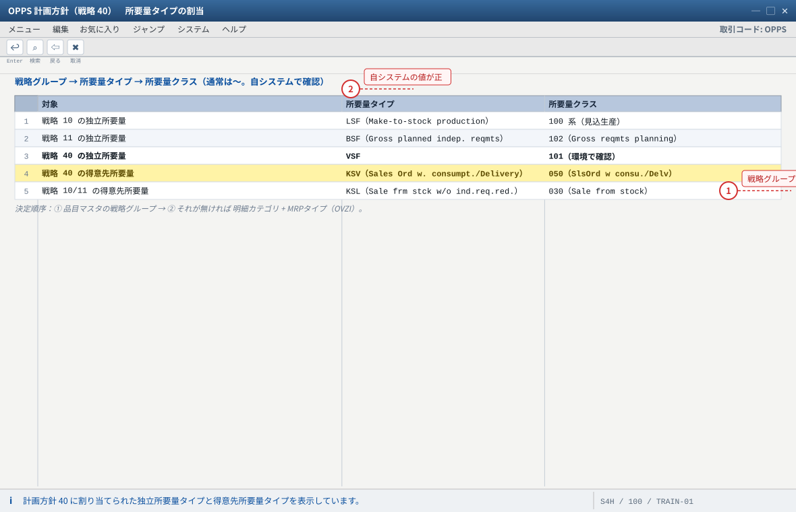
- 1 戦略グループが品目に入っていると OVZI の自建決定は効かない（優先順位が上）
- 2 タイプ名（VSF / KSV）は環境で番号が違うことがある。OPPS / OVZH で読んだ値が正
自システムでの確認：OPPS（計画方針）・OPPT（一覧）・OVZH・OVZI。実機側は VA03 の納入日程行・MD04 の独立所要量明細・SE16N: PBED / VBEP-BDART。
計画方針グループ（OPPT / OPPS / OPPJ）——戦略 10 と 40 を並べる
OPPT / OPPS / OPPJ- 目的
- 把「需求怎么来、受注要不要消费预测」打包成一个可分配给品目的键——这就是戦略グループ。本站练习用
40，对照用10（不消费）与11（不看库存）。 - IMGパス（日本語）
- IMG：生産 > 基本設定 > MRP > 計画 > 計画方針（
OPPS）/ 計画方針グループの定義（OPPJ）/ 一覧はOPPT。
SPRO の検索窓に「計画方針」と入れると一覧が出るので、メニュー階層を辿るより速い。
対照表（通常は〜。自システムの OPPT で確認）
| 戦略グループ | 説明（OPPT の日本語/英語） | 独立所要量タイプ | 得意先所要量タイプ | 受注は PIR を消費する？ |
|---|---|---|---|---|
| 10 | 見込生産（Make-to-stock production） | LSF | KSL | しない（受注は情報表示のみ、古い PIR から消減） |
| 11 | 見込生産・総所要量計画（Gross requirements planning） | BSF | KSL | しない（在庫も見ない。MRP3 の混合MRP区分 = 2） |
| 30 | ロット生産（Production by lot size） | LSF | KL（Sales ord.manufact.by lot size） | 受注は受注ロットとして扱う（戦略 20 との併用が典型） |
| 40 | 最終組立ありの計画（Planning with final assembly） | VSF | KSV | する（消费モード 2・逆 30 日 / 順 20 日 の例） |
| 70 | 組立レベルでの計画（Planning at assembly level） | VSFB | — | PIR は組立（アセンブリ）単位。最終組立は受注で起動 |
OPPT→ 戦略グループ40の行を開き、説明文と割り当て（独立VSF/ 得意先KSV）を确认。- 同じ画面で
10（LSF/KSL）·11（BSF/KSL）·30·70も並べて見る——説明文が最も信頼できる「标准值」。 - （自建する場合）
OPPJで新しい計画方針グループ（例Z040）を作り、独立VSF/ 得意先KSVを割り当てる。品目MM02MRP3 でZ040を選べれば成功。 - 練習⑤ の比較用：品目
ZMTS-FG10（戦略10）を作り、同じ PIR と受注で MD04 の挙動がどう違うかを見る。
OPPT：戦略グループ一覧の日本語/英語説明（これが最善の確認）。OPPS：そのグループが使う計画方針（所要量タイプ割当）。品目側は
MM03 MRP3 → 戦略グループ、表は SE16N: MARC-STRGR。戦略グループを空にすると受注が PIR を消费しなくなるので、必ず値が入っていることを確認する。40 = 最終組立ありの計画（Planning with final assembly）、30 = ロット生産（Production by lot size）、70 = 組立レベルでの計画（Planning at assembly level）、11 = 総所要量計画（受注は消費しない）。
请用 OPPT 的说明文字在自己系统里核对——相信你自己系统里的文字，不要背二手资料。10、11、40 的差别（各一句，不许用「见込生産」这个词）。（提示：10 = 只按预测生产、受注不动预测；11 = 连库存都不看，只按预测生产；40 = 受注会吃掉最近期的预测。）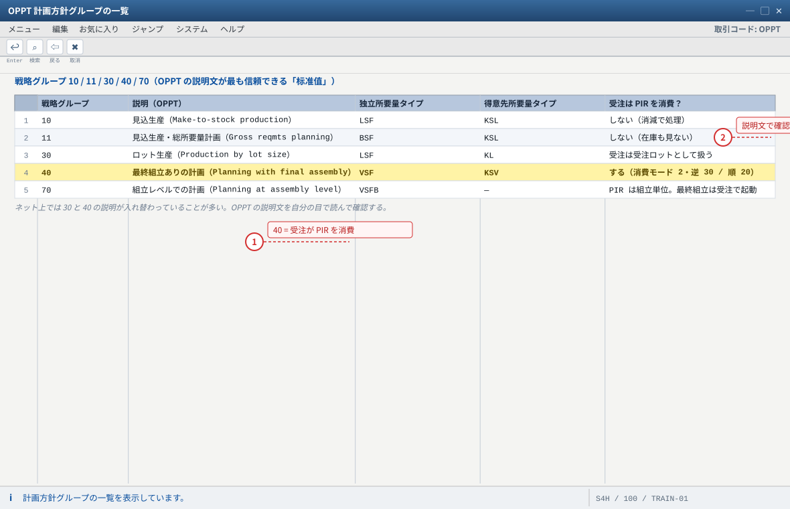
- 1 练习に使うのは 40（受注が PIR を消費する）。10 は消費しないので比較用
- 2 戦略グループを空にすると受注が PIR を消費しなくなる。品目に値が入っていることを確認する
自システムでの確認：OPPT の説明文（日本語 / 英語）、品目側は MM03 MRP3 → 戦略グループ、表は SE16N: MARC-STRGR。
在庫確認（ATP）の設定——MTS の「売れる量」を決める
OVZ9・CO09・MDVP・V_V2- 目的
- 把「库存够不够」这件事做成受注时的自动判定：受注保存 → 納入日程行の在庫確認 ON → 品目 MRP3 のチェックルール → チェックグループ × チェックルール（スコープオブチェック）→ 使用可能数量。MTS 的关键是「检查对象要包含入庫予定与出庫予定」，否则只能看现有库存。
- IMGパス（日本語）
- IMG：販売管理 > 基本機能 > 在庫確認と所要量転送 > 在庫確認 > 在庫確認の定義（
OVZ2：チェックグループ × チェックルール）/ 利用可能在庫確認制御（OVZ9：チェックルールごとのスコープオブチェック = 在庫/入庫予定/出庫予定/個別所要量/予約 の選択）。
T-code と画面名はバージョンで表記が異なるので、SPRO の検索窓で「在庫確認」を検索して自分の画面を確認する。
設定の 3 層（全部そろって初めて ATP が動く）
[1] 品目 MRP3 の「在庫確認」フィールド = チェックルール（例 02。値の意味は F1 で確認）
[2] 納入日程行カテゴリ（例 CP）の「在庫確認」ON + チェックグループ
[3] スコープオブチェック（OVZ9）：何を見るか
在庫（自由在庫） …… MTS は最低これ
入庫予定（製造指図/計画手配/購買発注） …… 予測で作った分を「将来の可用量」に含める
出庫予定（他の受注・出荷） …… 先に受注した客が優先される根拠
個別所要量（受注在庫） …… MTO で必須。MTS では通常 OFF
MM02→ZMTS-FG01→ MRP3 → 「在庫確認」にチェックルール（例02）を入れ、F1 で「何をチェックするか」の説明を読む。OVZ9→ そのチェックルール（02）→ スコープオブチェック（在庫 / 入庫予定 / 出庫予定 / 個別所要量 / 予約）の組合せを确认。見込生産では「在庫 + 入庫予定 + 出庫予定」が典型。- （チェックグループ）
OVZ2→ 得意先のチェックグループ（得意先マスタの一般データ/販売エリアに設定）とチェックルールの組合せに行がある事を确认。 - 入庫予定を ATP に含めるには、対象ドキュメント（製造指図・計画手配・購買発注）が入庫予定として認識されている必要がある——
CO09の要素一覧に計画手配/製造指図が並ぶかで判定する。
CO09（品目 + プラント + 確認日）→ 「利用可能数量」と要素一覧（入庫/出庫の内訳）。批量は
MDVP（集団在庫確認）。納期再設定・バックオーダー処理は V_V2。受注側の結果は
VA03 → 明細 → 納入日程行 の「確認済数量」、表は VBEP（納入日程行）と VBBS（引当/所要）。MM03 の F1 と OVZ9 のスコープで確認する。② スコープに「入庫予定」が入っていない → MTS で先造りした完成品が受注時に見えず、「在庫があるのに欠品扱い」になる。
③ 品目 MRP3 の在庫確認が空 → ATP が動かず、受注は常に「未確定」または「即納 OK」のどちらかに偏る。
④ 得意先のチェックグループ不一致 →
OVZ2 に組合せが無いとエラー。CO09 で ZMTS-FG01 を開き、練習③ の入庫（101）前と後で「利用可能数量」がどう変わるかを記録する。さらに受注を入れた後で V_V2 を実行し、納期とバックオーダーの動きを見る（练习④）。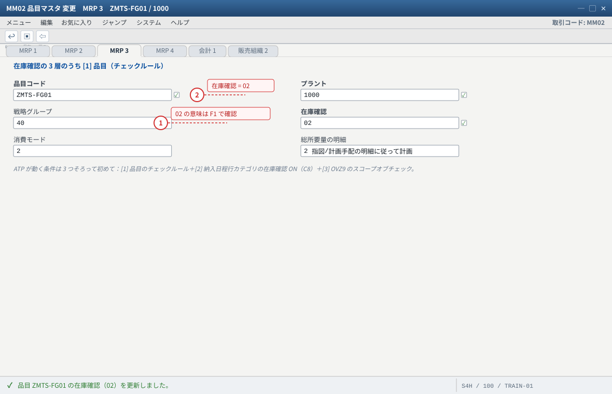
- 1 チェックルールの番号の意味（01/02/…）は環境で異なる。F1 のヘルプで「何を見るか」を読む
- 2 在庫確認が空だと ATP が動かず、受注は常に「未確定」か「即納 OK」に偏る
自システムでの確認：MM03 の F1 ヘルプと OVZ2（チェックグループ × チェックルール）/ OVZ9（スコープオブチェック）。
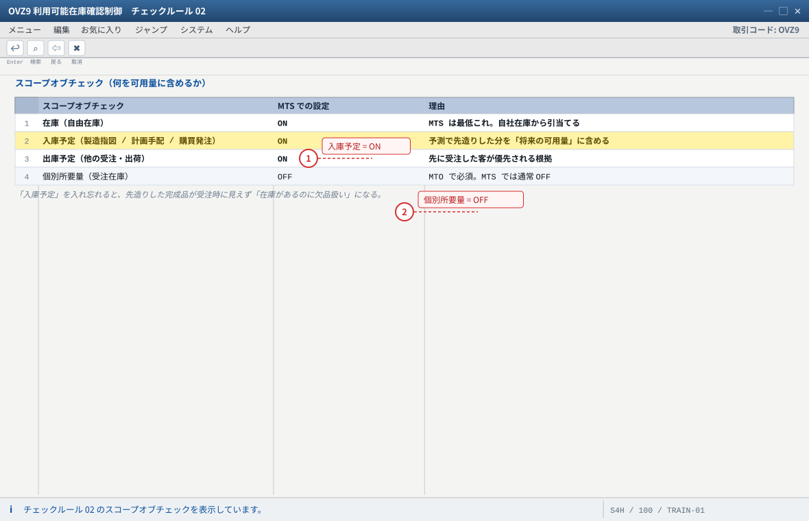
- 1 入庫予定を ON にしないと MTS の「先造り」が ATP に出てこない
- 2 個別所要量（受注在庫）は MTO 用。MTS では OFF
自システムでの確認：画面名と T-code はバージョンで異なるため、SPRO の検索窓で「在庫確認」を検索して自分の画面を確認してください。
MRP 側の設定と実行（MD01N・OMDU・PP01・CO40/CO41）
MD01N / MD02 / MD04 / OMDU / OPJH / OPL8 / CO40 / CO41- 目的
- 把「预测 → 补货」接起来：明确 MRP Live 的参数、指图类型的默认值、以及计划手配到制造指图的转换路径。
- IMGパス（日本語）
- MRP パラメータ：IMG：生産 > 基本設定 > MRP > MRP のためのパラメータ（
OMDU）——MRP リストを空にする場合の表示や「購買依頼の作成」などの既定値。
指図タイプ：IMG：生産 > ショップフロア制御 > マスタデータ > 指図 > 指図タイプの定義（OPJH。標準PP01を確認）／指図タイプ依存のパラメータ（OPL8）。
输入値 / 見るポイント
| 項目 | 値（通常は〜） | 確認方法 |
|---|---|---|
| MRP 実行 | MD01N（MRP Live、プラント/品目/製品グループで選択） | 実行後 MD04 → 計画手配ができていること。MRP リストは作られない |
| 単品目 MRP | MD02（単品目・多階層）/ MD11（単品目計画・手配の直接作成） | MD03 は提供されない（KBA 2640393） |
| 処理キー / 計画モード | 処理キー（NEUPL 総再計画 / NETCH ネットチェンジ 等） | MD01N の初期画面 F1 と OMDU |
| 指図タイプ | PP01（品目 MRP2 の伝票タイプ） | OPJH / MM03 MRP2 |
| 計画手配の変換 | CO40（単品目変換）/ CO41（一括変換）/ MD04 の「変換」ボタン | 変換後 CO03 で指図番号・状態を確認 |
OMDUで MRP パラメータを確認（変更は必須ではない。見るだけでも、後のトラブル対応で効く）。MD01N→ プラント1000/ 品目ZMTS-FG01（或は製品グループ）/ 処理キー → 実行。「MRP 結果の保存」等のフラグは実行ログとMD04で確認する。MD04→ZMTS-FG01で計画手配（在庫区分は空、受注番号なし）が出ていること。数量与日期按安全在庫/ロットサイズ算。CO40或CO41→ 計画手配を選択 → 変換 → 製造指図PP01生成。CO03でヘッダ確認。- （发展）
OPJH/OPL8で指図タイプPP01のパラメータ（解放範囲、入庫関連など）を読む——「なぜ保留（CRTD）で生まれるのか」が説明できるようになる。
MD04 に計画手配が出る／SE16N: PLAF に行がある（品目 + プラント）。② 部品侧：
MD04 で ZMTS-RM01 を見ると「従属所要量（お客様所要量とは別）」が出ている（BOM 展開の証拠）。③ 計画手配 → 指図：
CO01/CO03 或 AUFK/AFPO（PLNUM で計画手配番号と紐づく）。④ MRP パラメータ：
OMDU と MD01N の F1。MD01N 跑完去 MD05/MD06 找 MRP リスト → MRP Live は作りません（見るのは MD04）。② 「MRP 結果の保存」を外したまま実行 → 逐次表示は出るが計画手配が残らないことがある（実行後に
MD04/PLAF で必ず確認）。③ 計画手配ができたのに変換できない → 品目の手配タイプが空、或は指図タイプ（MRP2）が不正。
④ 部品の従属所要量が出ない → BOM の有効日/用途、或は品目の MRP ビュー欠落。
MD62）MD01N を再実行し、計画手配の数量がどう変わるかを記録する。→ これがネットチェンジの体感（変わった品目だけが再計算される）。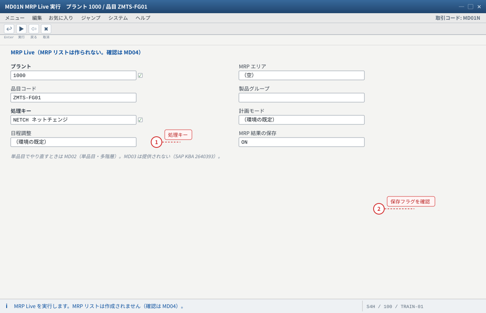
- 1 処理キーは NEUPL（総再計画）/ NETCH（ネットチェンジ）。F1 で意味を確認する
- 2 「MRP 結果の保存」を外すと逐次表示だけ出て計画手配が残らないことがある
自システムでの確認：OMDU（MRP パラメータ）と MD01N の F1。MRP Live と古典 MRP の差は SAP KBA 2640393 / SAP Note 1914010。
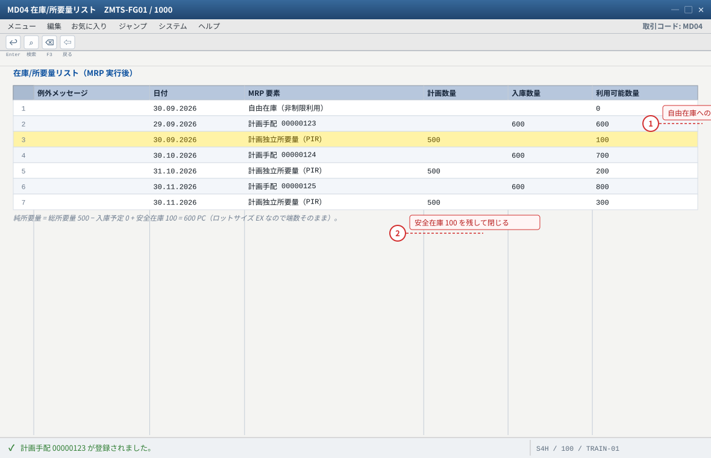
- 1 計画手配の在庫区分は空・受注参照なし = 自由在庫への補充（MTS）
- 2 PIR の合計 -1,500 が 計画手配 1,800 で埋まり、各月末に安全在庫 100 が残っている
自システムでの確認：SE16N: PLAF（品目 + プラント）→ PLNUM / GSMNG / PEDTR。要素名はシステム言語で異なります。
出荷・請求・自動転記・棚卸（MTS の出口）
VL01N / VL02N / VF01 / VTFL / OBYC / MI01- 目的
- 把库存变成应收账款，并确认 FI 侧自动转记被正确设定——MTS 的出库（PGI 601）会带走标准价库存，差异在月末才结账，所以「出库时的金额」与「实际成本」是两条线。
- IMGパス（日本語）
- 出荷伝票タイプ：IMG：ロジスティクス実行 > 出荷 > 出荷 > 出荷伝票タイプの定義（
0VLP系）。
請求タイプ：IMG：販売管理 > 請求 > 請求書 > 請求タイプの定義（VOFA）。
コピー制御（受注 → 出荷 → 請求）：VTLA（受注→出荷）/VTFL（出荷→請求）。
自動転記：IMG：物料管理 > 評価と勘定割当 > 自動転記の定義（OBYC）——BSX（在庫勘定）/WRX/GBB（出庫の相手勘定）。
見るポイント
| 対象 | 値（通常は〜） | MTS での意味 |
|---|---|---|
| 出荷タイプ / 請求タイプ | LF / F2 | 标准出荷・标准请求（MTO・ETO も同じ出口を使う） |
| PGI の移動タイプ | 601 | 自由在庫が減り、売上原価（標準価格ベース）が計上される |
| 在庫勘定（BSX） | 評価クラスごとに設定 | MTS は自由在庫なので BSX の勘定がそのまま使われる（MTO の受注在庫との対比点） |
| 棚卸 | MI01（棚卸伝票作成）→ MI04（入力）→ MI07（差異転記） | 見込在庫は実地棚卸の対象になる（MTO の受注在庫と扱いが違う） |
MM03で出荷プラント・出荷ポイント（OVXD系）を确认，能出荷即可。VL01Nで出荷伝票を作成 →VL02Nでピッキング（引当）→ 出庫確認（PGI）＝601。VF01→ 請求伝票作成 → 会計伝票番号（FB03）を確認。- （棚卸）练习用に
MI01→MI04→MI07を 1 回通しでやってみる（棚卸差異の転記先はOBYCのGBB/差異勘定）。
VL03N → 明細 → 在庫/引当 → PGI 後は MMBE の自由在庫が減っている（MB52 でも可）。② 库存传票：
SE16N: MATDOC（移動タイプ 601、指図/出荷伝票参照）。③ FI：
FB03 で 601 の会計伝票（在庫勘定 / 売上原価）と請求の会計伝票（売掛金 / 売上）をそれぞれ確認。④ 勘定の出どころ：
OBYC の BSX（評価クラス別在庫勘定）/GBB（出庫の相手勘定、キー VAX/VAY 等）。② 請求で金額 0 → 条件レコード（
PR00）の期限切れ或は販売組織不一致。③ 会計伝票が出ない →
OBYC の勘定未設定或は会計期間未開。MM03 会計1 の評価クラスも確認。FB03）で、借方/貸方の勘定と金額を書き出す。金額が「標準価格 × 数量」であることを確認する——これが「見込生産の在庫は標準原価で評価される」の実証。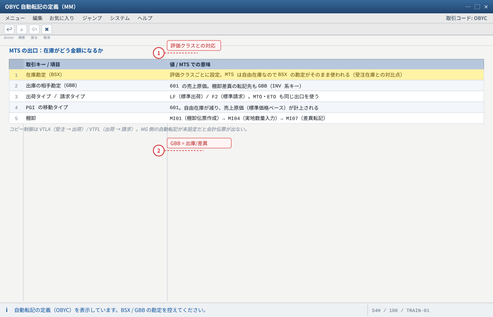
- 1 BSX は評価クラス別。会計1 の評価クラス（7920）と対応しているか確認する
- 2 GBB に 601 の売上原価と棚卸差異の両方がぶら下がる。キー名は環境で確認
自システムでの確認：FB03 で 601 の会計伝票と請求の会計伝票、SE16N: MATDOC（移動タイプ 601）。出荷伝票タイプは 0VLP 系、請求タイプは VOFA。
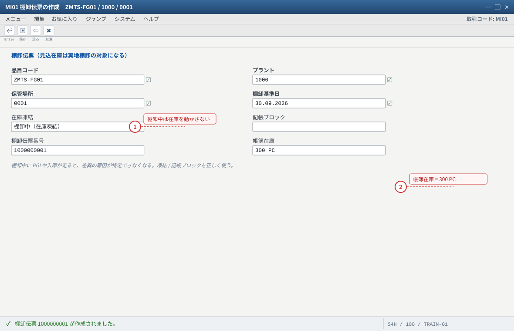
- 1 在庫凍結を ON にすると棚卸中の在庫移動を止められる
- 2 帳簿在庫 300 PC が MI04 で入力する実地数量との比較対象になる
自システムでの確認：MI03（棚卸伝票の照会）・MMBE・FB03（差異の会計伝票）。転記科目は OBYC の BSX / GBB。
Public Cloud 差异对照（On-Premise との対比）
SSCUI・スコープアイテム・Fiori- 目的
- 把「哪些配置在 Public Cloud 不能做」说清楚。Cloud 的逻辑是「What you see is what you get」：明細カテゴリや販売伝票タイプの新規作成は不可，只能选已激活的スコープアイテム提供的对象；配置走 SSCUI（自己服务配置 UI），操作走 Fiori 应用。
- IMGパス（日本語）
- Cloud 没有 SPRO，改由 「設定」アプリ / SSCUI（Manage Your Solution → Configuration）承载。具体 SSCUI 的 ID 因版本而异——用「設定」アプリの検索で「所要量タイプ」「計画方針」「在庫確認」を検索して自分の番号を確認するのが最も確実。
スコープアイテム（Cloud の「实现单位」）
| スコープアイテム | 名称 | 本教材との関係 | 出典 |
|---|---|---|---|
BJ5 | Make-to-Stock Production – Discrete Manufacturing （PIR → MRP → 計画手配 → 指図 → 引当/入出庫/ATP → 目標原価・実績原価） | 本教材の Cloud 版の基準。离散制造的见込生产全流程 | SAP Best Practices for SAP S/4HANA Cloud（bj5-ae/purpose） |
BJ8 | Make-to-Stock Production – Process Manufacturing Based on Process Order | 流程制造版（流程订单代替生产订单）。SAP KBA 2964352 周辺 | SAP Best Practices / SAP KBA 2964352 |
J44 | Material Requirements Planning | MRP 单体的スコープアイテム（MRP 関連の設定と运行） | SAP Best Practices 一覧（製造スコープアイテム） |
| その他（要確認） | Make-to-Stock 相关的追加スコープアイテム（例：在庫評価・棚卸・余剰/欠品の処理） | ID は版本で追加/改名されるので、Road Map Viewer の Best Practices 一覧で自分の版本の ID を確認する | — |
On-Premise との差（設定と操作）
| 対象 | On-Premise | Public Cloud |
|---|---|---|
| 明細カテゴリ / 販売伝票タイプ | VOV7/VOV4 で新規作成可（ZTAN など） | 新規作成不可。既存の TAN/CP を使う（「すでにあるもの」だけ） |
| 明細カテゴリ別の所要量タイプ決定 | OVZI | SSCUI 105120「明細カテゴリ別の所要量タイプ決定」（姊妹站 sapmto で確認済みの ID。版本で変わる可能性があるため設定アプリで要確認） |
| 品目マスタの MRP ビュー | MM01/MM02（SAP GUI） | Fiori「Manage Product Master Data」/ 品目マスタアプリ。戦略グループ・消費モードは選択式で、自由に新キーは作れない |
| PIR（需要予測）の登録 | MD61/MD62/MD73 | Fiori「Manage Planned Independent Requirements (PIRs)」（Best Practices のテストスクリプトに記載あり。スコープアイテム内で提供） |
| MRP 実行 | MD01N（MRP Live） | Fiori「Schedule MRP Runs」/「Material MRP」系アプリ。MD01N 相当だがアプリ名・画面が異なる |
| 指図の変換・実績 | CO40/CO41/CO11N/MIGO | Fiori「Convert Planned Orders」/「Confirm Production Operation」/「Post Goods Movement」 |
| 差異計算・決済 | KKS1/KKS2/KKAO/KO88/CO88 | Fiori「Calculate Variances」/「Settle Production Orders」系（アプリ名は版本で変わります） |
- 「設定」アプリ（Manage Your Solution → Configuration）で 所要量タイプ・計画方針・在庫確認 を検索し、自分のシステムに存在する SSCUI の ID と名称を書き出す。
- 同画面で スコープアイテムの一覧（Scoping）を開き、
BJ5（或は自分の版本の Make-to-Stock 用 ID）が激活されているか确认。 - Fiori で「Manage Planned Independent Requirements」を探し、
ZMTS-FG01に PIR を 1 行登録してみる（Cloud 版 练习①）。 - できないことを明確にする：「自建明細カテゴリ
ZTAN」与「自建計画方針グループZ040」は Cloud では実現不能——Cloud 版の練習は「標準のTAN/CP/戦略40を確認して使う」に切り替える。
② 設定項目の有無：「設定」アプリの検索（ID ではなく名称で検索するのが現実的）。
③ 操作：Fiori Launchpad の検索で
PIR・MRP・Production Order を入れて自分のアプリ名を確認する。本節で確実に断言できるのは
BJ5（Make-to-Stock Production – Discrete Manufacturing）と SSCUI 105120（明細カテゴリ別の所要量タイプ決定）までです。他の ID は版本で変わるため、必ず自システムで確認してください。VOV7/OVZI が無くて詰まる。先にスコープアイテムの提供範囲を確認する。② 「設定アプリに項目が無い」＝「その版本では未提供」であることが多い（キーを追加できないことが仕様）。SAP Note/KBA 与 SAP for Me の SSCUI 一覧で裏取りする。
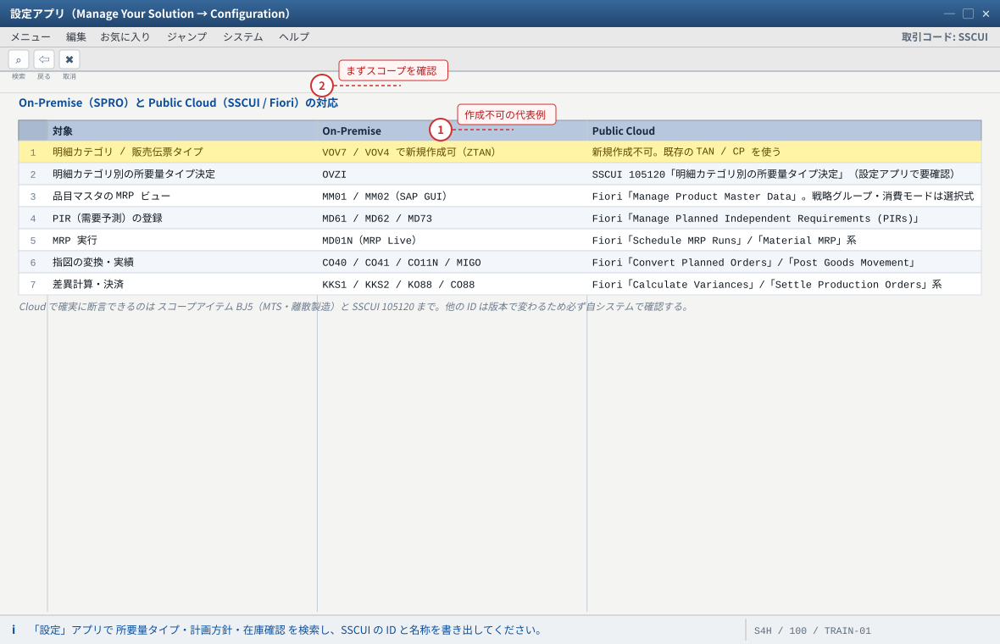
- 1 Cloud では自建明細カテゴリ ZTAN・自建計画方針グループ Z040 は作成できない（キーを増やせないのが仕様）
- 2 スコープアイテム（BJ5 / BJ8 / J44）の提供範囲を先に確認する。「設定に項目が無い」＝「その版本では未提供」
自システムでの確認：Road Map Viewer（SAP Best Practices）の版本別一覧、または「設定」アプリのスコープ画面。
配置完了チェックリスト
ZMTS-FG01の MRP3 に戦略グループ40、MRP4 の個別/包括所要量が空、MRP1 がPD/EX/手配タイプE。- MRP2 の安全在庫
100PC、MRP3 の消費モード2（逆 30 / 順 20）。 MM03会計1 に標準価格8,000JPY（価格管理S）が出る（CK11N→CK24済み）。- BOM（RM01×2 / RM02×4）と工程
0010が有効で、MD02で部品に従属所要量が出る。 VA01の受注明細がTAN（品目カテゴリグループ0001）、納入日程行がCP（所要量転送 ON・在庫確認 ON）。OVZGで使われる所要量クラスに個別在庫が無い、OPPTで戦略40の説明と所要量タイプを読めた。CO09で利用可能数量と要素が見え、MDVP/V_V2の使い方が分かる。MD01Nで計画手配が生成され、CO40/CO41でPP01の指図に変換できた。VL01N→VL02N(601)→VF01が通り、FB03で会計伝票が見えた。- Cloud の場合はスコープアイテム（
BJ5等）と SSCUI の提供範囲を確認し、できないことを 3 つ説明できる。
OPPT/OPPS/OVZH/OVZG の対応表）。② 戦略 10 は受注が消費しない・戦略 11 は在庫を見ない（混合MRP区分
2）：SAP PRESS blog 4 Strategies for Make-to-Stock Production with SAP S/4HANA。③ MRP Live（
MD01N）は MRP リストを作らない・MD03 は無い：SAP KBA 2640393 / SAP Note 1914010。④ PIR の表（
PBIM/PBED/PBHI・有効版 T459U）与 消費/消減 の違い：SAP Help（Support Content）Tables and programs of planned independent requirements。⑤ 納入日程行カテゴリ
CP が標準の MRP 用（所要量転送 + 在庫確認 + 601）：SAP Community（Schedule line category CP / Link between MRP type and schedule line category）、VOV5/VOV6 の IMG パスは SAP 各チュートリアル。⑥ 差異カテゴリ：SAP Help Variance Categories / SAP Learning Performing Variance Calculation；差異関連 T-code（
OKV1/OKVW/OKVG）は SAP Community Variance calculation_PP。⑦ Cloud：スコープアイテム
BJ5（SAP Best Practices bj5-ae/purpose）、BJ8・J44（製造スコープアイテム一覧）、SSCUI 105120（明細カテゴリ別の所要量タイプ決定）。⑧ 表フィールド（
MARC-STRGR/VRMOD/VINT1/VINT2、T438M-PRREG、TVEP-BEDSD/ATPPR/BDART、TVAP-SOBKZ）：SAP Datasheet / LeanX / sapstack のフィールド一覧。